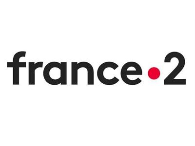
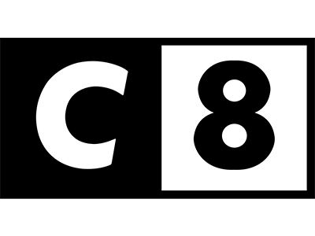
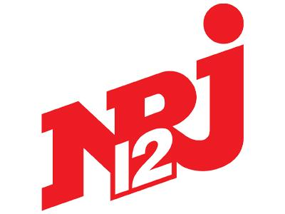
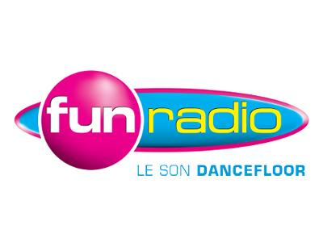
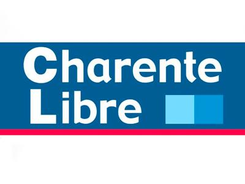

TV · PortraitMédias & Presse
Une histoire suivie par la télévision, la radio et la presse
Marty Blind DJ intéresse les médias parce que son parcours relie plusieurs sujets : handicap visuel, musique, production, entrepreneuriat, livre, Blind Touch, humour et résilience.

Références
Vu, entendu et relayé

TV · Parcours
TV · Témoignage
Radio · Musique
Presse · CharenteAngles médias
Plusieurs sujets, un même parcours
Marty peut intervenir sur des formats courts ou longs, en portrait, interview, podcast, émission, article ou sujet vidéo. Le bon angle dépend du média, mais le fil reste le même : une histoire personnelle devenue une énergie de création.
DJ non-voyant et producteur
Le parcours de Marty Blind DJ, ses prestations, son univers musical et son profil artiste Spotify.
De l'Ombre à la Lumière
Le livre, l'accident du 4 août 2005, la reconstruction et le besoin de raconter sans pathos.
Blind Touch
Une marque qui parle du handicap visuel avec humour, style, autodérision et engagement.
Formation et coaching
Des accompagnements pour les déficients visuels et pour celles et ceux qui veulent retrouver confiance.


Kit presse
Les informations utiles pour préparer une interview
Pour un média, une émission, un podcast ou un article, la demande doit préciser le sujet, le format, la date souhaitée et le contexte éditorial.
Marty Blind DJ, alias Martin Chasseret
Devenu aveugle à 15 ans après un accident, Marty Blind DJ est aujourd'hui DJ producteur, auteur bestseller, conférencier, formateur, coach et fondateur de Blind Touch.
Handicap, musique, livre, entrepreneuriat
Un parcours qui permet d'aborder plusieurs angles sans réduire Marty à son accident.
Photos, liens et contexte
Pour préparer un sujet, préciser le format attendu, le délai, le média, le thème et les ressources nécessaires.
Demande média
Utilisez la page contact pour préciser l'émission, le délai et le format.